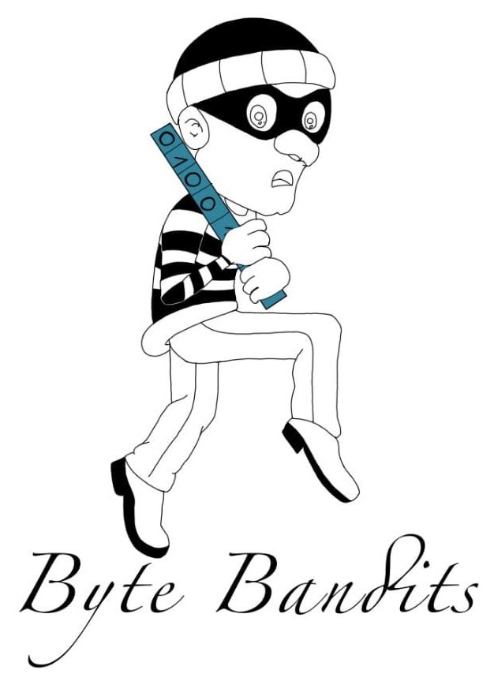

Product Description
Our app, powered by ChatGPT, generates automated educational questions across various subjects, helping teachers and students create quizzes, assignments, and study materials in seconds. With a user-friendly interface, it offers customizable question formats like multiple-choice, true/false, and short answers, promoting interactive learning and efficient knowledge testing. Perfect for classrooms, self-study, or corporate training.
Developers
Byte Bandits
-Stealing the bugs, delivering the bytes.

Jingya (Openness): Product Manager (Creative Thinker)
Jingya, with a personality of openness, is a good fit for the Product Manager role.
Gabriel (Conscientiousness): Lead Developer (Detail Oriented)
Gabriel’s conscientious nature makes him a good choice for Lead Developer.
Chen (Extraversion): Scrum Master (Team Communicator)
Scrum Master is a key role. Chen, with extraversion, will likely do well as the Scrum Master.
Katherine (Agreeableness): Support Lead (Supportive Collaborator)
Katherine’s agreeableness suits her the role of Support Lead.
Alena (Neuroticism): Risk Manager (Critical Thinker)
Alena’s neuroticism may give her a keen eye for potential risks and issues, which is an asset for a Risk Manager.